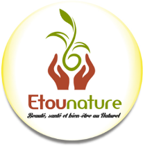

Qui sommes-nous ?
Dispositif d’accompagnement du WIC Sénégal, la WIC Académie intervient comment un véhicule complémentaire à WIC Capital, pour fournir un appui et une assistance technique adaptés aux femmes entrepreneurs à travers: la mise à disposition d’un centre de services partagés, l’accompagnement individualisé pour une croissance soutenue au sein de leur industrie, la mise en relation avec des partenaires et conseillers adaptés et l’appui à la levée de fonds.
Notre vision est de devenir le programme de référence en Afrique qui accompagne, forme et a un impact positive sur tous les différents éléments et acteurs de l’écosystème entrepreneurial féminin, afin de le rendre robuste, créatif et durable.
WIC Académie capitalise sur l’expertise des membres du WIC, les partenariats techniques avec des organisations locales et internationales, ainsi que sur l’expertise externe pour fournir un accompagnement et une assistance technique de haut calibre aux femmes entrepreneurs africaines.
Coaching personnalisé
Les entreprises de la WIC Académie bénéficient d'un coaching personnalisé par un membre du WIC et de l'accompagnement d'experts au besoin.
Opportunités de réseautage
Des événements de networking, y compris des mixeurs par secteurs d'activité, seront organisés pour encourager la collaboration et les synergies entre les bénéficiaires.
Centre de services partagés
Un centre de services partagés est mis à disposition des bénéficiaires de l'académie pour la formalisation et le support administratif (comptabilité, RH, services juridiques, etc.).
Pour bénéficier de l'accompagnement de la WIC Académie, veuillez envoyer ce formulaire dûment rempli par courriel à contact@wicsenegal.com
Rejoignez la WIC Académie
Êtes-vous une entreprise dirigée par une ou des femmes? Souhaiteriez-vous bénéficier d'un accompagnement d'experts dans leur milieu et du mentorat de femmes chefs d'entreprises ? Nous vous encourageons à postuler pour la prochaine cohorte de la WIC Académie.
Pour plus d’informations, veuillez nous contacter par email à contact@wicsenegal.com ou par téléphone au +221 76 569 83 97.
Rejoignez-nousCohorte Inaugurale
Adaa Ada, le retour à la tradition, est une marque sénégalaise qui conçoit des produits capillaires dont la matière première est principalement composée de fruits et légumes locaux tels que le gombo, l’hibiscus, les feuilles de baobab, la citronnelle et la mangue. Cette entreprise souhaite valoriser les produits du terroir tout en offrant des produits de qualité et accessibles à ses clients.
Adaa Ada
Cosmétique
Bassari Baobab est une start-up composée à 99% de femmes. L’entreprise s’active dans la valorisation des produits agro-forestier, en particulier, du fruit du baobab avec notamment des produits commercialisés sous la marque Zahra® et Mouna®. Elle ambitionne de promouvoir les fruits agro forestiers grâce à une présence effective sur le marché sénégalais et à l’international.
Bassari Baobab
Agro-industrie
L’entreprise E-cover a pour activité la revalorisation de pneus usés en deux produits principaux: (1) les granulats SBR, principalement utilisés pour l’installation et l’entretien des gazons synthétiques, et (2) le broyat de pneus, un produit intermédiaire, utilisé comme combustible par les cimenteries, en substitution des combustibles fossiles, dans un soucis de respect des normes internationales et de réduction de coûts.
E-Cover
Recyclage
L’entreprise E-TONTINE est une tontine en ligne, qui consiste à la mise en place d’un système d’épargne moderne s’appuyant sur des plateformes telle que Facebook, Twitter et des mobiles money comme Orange money, Wari à l’instar des tontines de nos mamans avec comme ambition de joindre le patrimoine culturel à l’aspect économique. En effet au Sénégal, au moment où les membres des tontines gagnent de l’argent à tour de rôle, l’entreprise propose des articles électroménagers, mobiliers de maison, literie, tissus, matériels informatiques etc.
E-tontine
Finance informelle
Etounature est une entreprise qui valorise les produits alimentaires et cosmétiques naturels du Sénégal. Elle offre une solution aux problèmes de beauté, santé et bien-être de ses clients en leur donnant des conseils adaptés à leurs besoins.
Etounature
Santé/Beauté
Kaya est une marque de vêtements et accessoires qui valorise la fabrication artisanale, les tissus traditionnels et le savoir-faire sénégalais. A travers la marque elle souhaite revaloriser le potentiel, les ressources humaines, les matières premières nobles existants au Sénégal et en Afrique en général. Elle ambitionne de concurrencer les standards internationaux et de s’exporter à travers le monde.
Kaya
Mode/Textile
Mary’s, c'est une histoire de famille. Elle est la résultante d'un art ancestral transmis de mère en fille , dans une pure tradition de produits BIO de haute qualité. Cette transmission est faite dans le respect des traditions sénégalaises et maliennes. Elle a un large panel de produits bios des senteurs (sarakhatane, diguitié), des produits cosmétiques, des huiles parfumées et l'épicerie.

Mary's
Parfumerie
Masyrah est une PMI qui a pour mission de réinventer les saveurs africaines à travers des condiments, aide culinaires et plats cuisinés. Depuis sa création Masyrah a développé une gamme de condiments naturels (marinades, sauces, mélanges d’épices) et expérimenté des produits prêts à l’emploi (pates à beignets, céréales précuites) qui vont évoluer vers une gamme complète. Leurs produits premium s’adressent à une clientèle active, soucieux d’un mode de vie sain et désirant renouer avec les saveurs locales.
Masyrah Gourmandises
Agro-industries
Le centre TDH est le 1er centre dédié principalement à l’enseignement des danses urbaines, sans toutefois se limiter exclusivement à celles-ci. Les cours sont accessibles aux amateurs, qui souhaitent pratiquer pour le fun, le sport, ou par passion. La vision de TDH est d’être le centre de danses urbaines le plus dynamique et innovant d’Afrique de l’ouest et d’offrir des solutions d’employabilité aux danseurs professionnels africains.

The Dance Hall
Culture/Danse
Contactez-nous
Êtes-vous passionné par les problématiques concernant l’entrepreneuriat féminin au Sénégal et en Afrique en général ? Souhaitez-vous en apprendre plus sur le WIC Sénégal et ses activités d’appui aux femmes entrepreneurs ? Désirez-vous adhérer au club ? N’hésitez surtout pas à nous contacter !
Location:
Immeuble le Thiargane 8e étage, Dakar-Fann, Sénégal
Email:
contact@wicsenegal.com
Call:
+221 76 569 83 97